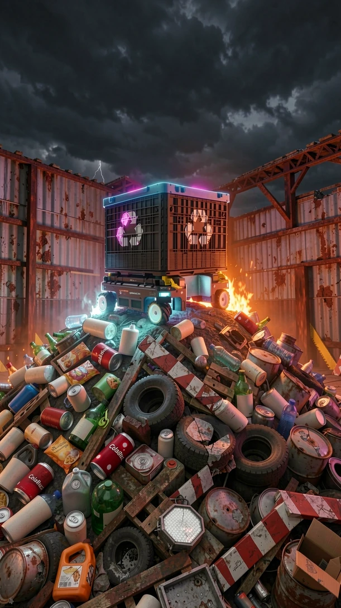

a01 is booting.
Dock 01 · service bay
Parked. Charging.
Slot 1 · top
Bin, locked on
Slot 2 · front tool mount
Empty
Battery
100 %

Level 1 · the tutorial
Early access · it gets updates as people play
Level 1
Resting on the landing, all four wheels on it.
The hall's shutters roll up: the town round it is open. Scavenge by day, craft, build a shelter before night falls.
3D assets: NVIDIA SimReady Assets (CC BY 4.0), modified: https://huggingface.co/datasets/nvidia/simready-assets. The open world's crafted machines: robotic_system_a01, extrusion_tSlot_aluminum_b06, robot_surgical_c01, lamp_uvc_robot_a01, robotics_small_bot_a01, Xray_machine_HVgenerator_a01, Xray_machine_buckyStand_a01, laser_system_a01, ultrasound_b01, hemodialysis_machine_a01, anesthesia_machine_a01, lung_ventilation_artificial_a01, defibrillator_a01, equipment_3d_printer_b01, powerTool_welding_station_c01, electrical_main_terminal_a01, testingTool_battery_analyzer_c01, labware_table_thorlabs_a01, climate_heater_dieselTorpedo_a01, engineAssembly_electric_engine_a01, equipment_surgeProtector_batteryClamp_a01, CT_injection_system_a01, detector_thermal_fire_a01, lamp_uvc_a01. Its supplies: handTool_wrench_monkey_a01, power_battery_9v_a01, consumable_hose_hydraulic_a01, consumable_lightBulb_h7_a01, consumable_fuse_mega_orange_a01, electricalSystem_alternator_a01, electrical_cable_a01, detector_camera_a01, computer_monitor_office_a01, fireProtection_extinguisher_portable_b01, anesthesia_mask_a01, climate_shopFan_pedestal_a01, testingTool_multimeter_clamp_b01, IV_pole_a01, serviceTool_pliers_oilFilter_a01, equipment_surgeProtector_batteryClamp_b01, consumable_hydraulic_fluid_a01. Its shelters: wire_securityRoom_b01, barrier_gate_safety_a02, structure_ceiling_a01, pallet_rackable_solid_top_blue_a02, storage_shelf_basic_a01, ibcTank_steel_stainless_a01, machineGuard_a01, bedding_a01, crate_plywood_b01, scaffold_rolling_steel_a03, modular_warehouse_h450cm_corner_in_a01, modular_warehouse_h450cm_center_a01, wire_machineGuard_a01, furniture_workbench_standard_e01, furniture_workbench_modular_a01, equipment_robot_charger_a01, lighting_overheadLed_hexGrid_a01. Its night lights: lighting_taskLight_portableWork_a01, lighting_taskLight_cordedInspection_a01, lighting_taskLight_linearStripBench_a01, warehouse_fireAlarmLight_a01, lighting_candles_tea_a01. The energy leech: consumable_hose_hydraulic_a02, equipment_extensionCord_EV_type2_a01, equipment_surgeProtector_batteryClamp_b01, consumable_lightBulb_py21w_amber_a01. The solar panel: lighting_overheadLed_lightPanel_a01. The rusty beam and the baked grime: structure_beam_a01. Converted from OpenUSD to glTF 2.0, decimated, grimed and recoloured for the game. NVIDIA does not endorse this game.
Licence: https://creativecommons.org/licenses/by/4.0/ (no warranties: CC BY 4.0, section 5); what was changed: p0pc0rn's licenses/NOTICE-trolley-model.md and NOTICE-trolley-props.md. Trolley model: equipment_trash_trolley_a01, NVIDIA SimReady, CC BY 4.0. 3D assets: NVIDIA SimReady Assets (CC BY 4.0), modified: the robot arm (robotic_system_arm_b01) with an oil-filter-pliers claw, the diesel can, the trash, the battery, the drums, the pallet and the barricade; round the hall, the dock's forklift, pallet jack, tote, crates, rack, hopper and rail, the park's sofas, chairs, kiosk, cooler, bins and lights, the metro's car shell, kiosk, vending machine, barriers, cabinet, siren poles, bins and duct, the forest's wheelbarrow, pipes and boards, and the dead trees' bark; the open world's supplies, salvage, shelter kits, night lights, the energy leech, the solar panel and the 24 crafted machines. Physics: Rapier (Apache-2.0). Drawing: three.js (MIT). The room, the dock, the world's ground, walls and blocks, and the dead trees' shapes are the game's own.
Crafting · obscure science
The shelter · piece by piece
Carried in the bin or the claw
Collected
Drained
The battery ran out.
There is no win and no second life: the save is gone and it starts again from the beginning.
3D assets: NVIDIA SimReady Assets (CC BY 4.0), modified: https://huggingface.co/datasets/nvidia/simready-assets. The open world's crafted machines: robotic_system_a01, extrusion_tSlot_aluminum_b06, robot_surgical_c01, lamp_uvc_robot_a01, robotics_small_bot_a01, Xray_machine_HVgenerator_a01, Xray_machine_buckyStand_a01, laser_system_a01, ultrasound_b01, hemodialysis_machine_a01, anesthesia_machine_a01, lung_ventilation_artificial_a01, defibrillator_a01, equipment_3d_printer_b01, powerTool_welding_station_c01, electrical_main_terminal_a01, testingTool_battery_analyzer_c01, labware_table_thorlabs_a01, climate_heater_dieselTorpedo_a01, engineAssembly_electric_engine_a01, equipment_surgeProtector_batteryClamp_a01, CT_injection_system_a01, detector_thermal_fire_a01, lamp_uvc_a01. Its supplies: handTool_wrench_monkey_a01, power_battery_9v_a01, consumable_hose_hydraulic_a01, consumable_lightBulb_h7_a01, consumable_fuse_mega_orange_a01, electricalSystem_alternator_a01, electrical_cable_a01, detector_camera_a01, computer_monitor_office_a01, fireProtection_extinguisher_portable_b01, anesthesia_mask_a01, climate_shopFan_pedestal_a01, testingTool_multimeter_clamp_b01, IV_pole_a01, serviceTool_pliers_oilFilter_a01, equipment_surgeProtector_batteryClamp_b01, consumable_hydraulic_fluid_a01. Its shelters: wire_securityRoom_b01, barrier_gate_safety_a02, structure_ceiling_a01, pallet_rackable_solid_top_blue_a02, storage_shelf_basic_a01, ibcTank_steel_stainless_a01, machineGuard_a01, bedding_a01, crate_plywood_b01, scaffold_rolling_steel_a03, modular_warehouse_h450cm_corner_in_a01, modular_warehouse_h450cm_center_a01, wire_machineGuard_a01, furniture_workbench_standard_e01, furniture_workbench_modular_a01, equipment_robot_charger_a01, lighting_overheadLed_hexGrid_a01. Its night lights: lighting_taskLight_portableWork_a01, lighting_taskLight_cordedInspection_a01, lighting_taskLight_linearStripBench_a01, warehouse_fireAlarmLight_a01, lighting_candles_tea_a01. The energy leech: consumable_hose_hydraulic_a02, equipment_extensionCord_EV_type2_a01, equipment_surgeProtector_batteryClamp_b01, consumable_lightBulb_py21w_amber_a01. The solar panel: lighting_overheadLed_lightPanel_a01. The rusty beam and the baked grime: structure_beam_a01. Converted from OpenUSD to glTF 2.0, decimated, grimed and recoloured for the game. NVIDIA does not endorse this game.
Troll-E